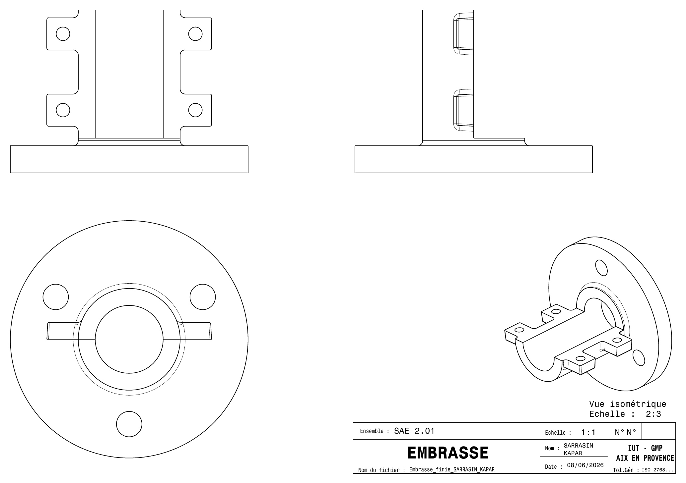

Une embase en fonte
Dessiner la pièce brute d'une embase en fonte pour pouvoir la mouler.
Le contexte
Ce projet est la SAÉ 2.01 de l'IUT d'Aix-en-Provence, réalisée en binôme avec Ahmet Kapar.
Nous sommes partis d'une pièce fournie sous CATIA : une embase en fonte (EN-GJS-400). La consigne était de concevoir sa forme pour qu'elle puisse être moulée, avec les dimensions du cahier des charges. Il fallait donc penser à la fabrication en même temps qu'à la forme.
Ma part du travail
J'ai réalisé le travail sous CATIA, les dessins de définition, les justifications des choix et le rapport, avec Ahmet.
Les choix de moulage
Tous ces choix suivent le cours de fonderie.
- Plan de joint (la surface où se séparent les deux demi-moules) : c'était la seule position viable. Elle facilite en plus l'extraction du noyau.
- Un seul noyau, pour l'alésage de Ø40. Les quatre autres alésages sont trop petits pour avoir un noyau.
- Surépaisseurs : de la matière ajoutée sur les surfaces qui seront réusinées.
- Rayons de 1 mm sur les arêtes et de 3 mm sur les raccordements, d'après le tableau du cours.
- Dépouilles : des parois légèrement inclinées pour pouvoir démouler la pièce.
De la pièce brute à la pièce finie


Entre les deux, l'état de surface et la propreté changent. Le moulage n'est pas précis : c'est pour cela que la pièce brute porte des surépaisseurs, qui sont ensuite usinées.
La gamme de moulage
La gamme décrit, dans l'ordre, toutes les phases de la fabrication. Elle en compte onze, de la fabrication du moule à l'expédition.
- Demi-châssis inférieur
- Demi-châssis supérieur
- Noyau (silicate de sodium, CO₂)
- Démoulage
- Remoulage
- Coulée
- Décochage, dénoyautage
- Démasselotage
- Nettoyage, finition
- Contrôle
- Expédition
Difficulté et résultat
Au début, je n'avais pas compris comment fonctionne le moulage. Il a fallu l'apprendre pour pouvoir dessiner une pièce qui se moule.
Résultat : 15/20. Aucune correction n'a été demandée.